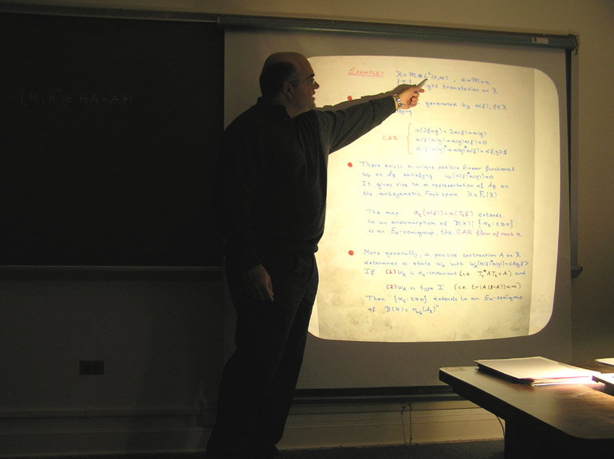
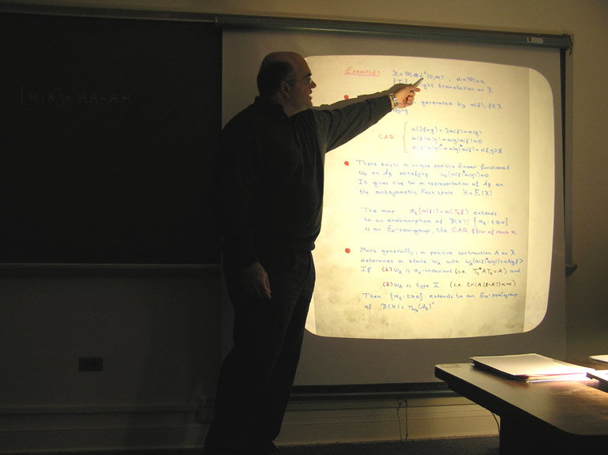

Seminar in operator theory and operator algebras (MATH 9310)
Spring 2014
The seminar is organized by David Sherman. We meet Tuesdays 3:30-4:30 in Kerchof 326.
all of January |
The seminar will not run during January because of the abundance of department colloquia meeting in our slot and at other times. The colloquia on January 21 (Leonel Robert) and January 28 (Kostya Medynets) involve operator algebras; see the department colloquium page for abstracts and other details. |
February 4 |
Jim Rovnyak, UVaLeech's Theorem. Version 1.0
The lecture will present R. B. Leech's original proof, which is elementary and constructive. The history of the result, why Leech's original proof has not previously been published, and subsequent developments will be briefly discussed.
|
February 11 |
Marius Ionescu, Colgate UniversityFractafolds, local homeomorphisms, and groupoidsStrichartz defined a fractafold to be the equivalent of a manifold when the underlying space is a fractal instead of a Euclidean space. A particular class of fractafolds are the so-called fractafold blowups. For example, one can view the real line as a fractadold blowup of the unit interval. In this talk that is based on joint work with Alex Kumjian, I present our work in finding and analysing symmetries of fractals associated to iterated function systems and to study the C*-algebras that arise from the dynamics. Our starting point is Stricharz's construction of a family of fractafold blowups of the invariant set of an iterated function system which is parameterized by a Cantor set. We assemble these fractafold blowups into a fractafold bundle. In general there do not appear to be any natural nontrivial symmetries of a generic blowup but Stricharz's observation suggests that we look for symmetries of the bundle instead. Indeed we show that there is a natural groupoid action on the fractafold bundle. This groupoid action and the associated action groupoid constitute the main objects of this presentation. |
February 18 |
Chris Ramsey, UVaDynamical systems, operator algebras, and the structure of the unitariesCan one embed the simplex with vertices indexed by the permutation group Sn into the unitary group U(n) in a natural way? If you can answer this open question then you have proven that two operator algebras are isometrically isomorphic if and only if their associated dynamical systems are piecewise conjugate. In these two talks I plan on tracing the history of these problems with the intention of revealing the strong connection between these three areas. |
February 25 |
Chris Ramsey, UVaDynamical systems, operator algebras, and the structure of the unitariesCan one embed the simplex with vertices indexed by the permutation group Sn into the unitary group U(n) in a natural way? If you can answer this open question then you have proven that two operator algebras are isometrically isomorphic if and only if their associated dynamical systems are piecewise conjugate. In these two talks I plan on tracing the history of these problems with the intention of revealing the strong connection between these three areas. |
March 4 |
Mike Jury, University of FloridaCANCELED DUE TO WEATHER, RESCHEDULED TO APRIL 29The Southeastern Analysis Meeting (SEAM) will be held at Clemson, March 7-8. |
March 11 |
SPRING BREAK |
March 18 |
Paul Bourdon, UVaOn spectra of sumsI'll provide spectral characterizations of sums of elements of a unital algebra over a field when certain pairwise products of the summands are zero. Applying these characterizations in the context of the Calkin Algebra yields descriptions of essential spectra of composition operators on the Hardy space whose symbols belong to the class S(2) introduced by Kriete and Moorhouse. |
March 25 |
Scott Atkinson, UVaA convex structure on Hom spaces of von Neumann algebrasAs a parallel to the semigroup structure of extensions of C*-algebras in BDF theory, we follow a recent paper of Nate Brown and show how a convex structure can be placed on Hom(N,Rω)--the space of unital *-homomorphisms from N to Rω modulo unitary equivalence. Here N is a separable II1 factor and Rω is an ultrapower of the hyperfinite II1 factor. Extreme points in this structure will be characterized, and a (nontrivial) dynamical system will be introduced. We will also briefly discuss some possible generalizations/derivatives of this idea (e.g. allow more than just II1 factors in the first argument, change equivalence relation, etc.). |
April 1 |
Katie Quertermous, James Madison UniversityUnitary equivalence of C*-algebras generated by composition operators on the Hardy and weighted Bergman spacesIn this talk, we will investigate the unitary equivalence of a class of weighted composition operators on the Hardy and weighted Bergman spaces. These results establish a strong unitary equivalence between the C*-algebras generated by a composition operator Cφ and the ideal of compact operators on the corresponding spaces in the case that φ is a linear-fractional, non-automorphism self-map of the unit disk that fixes a point on the unit circle. Thus, the structure theorems for these C*-algebras in the Hardy space setting transfer to the weighted Bergman space setting. |
April 8 |
Emmanuel Fricain, Université Lille 1A brief review on Carleson type embeddingsLet H2 be the Hardy space of the unit disc D of the complex plane. A famous theorem of Carleson characterizes the positive and finite Borel measures m on D such that the space H2 embeds continuously into L2(m). In this talk, we briefly review some results of this type for some other spaces of analytic functions on D. In particular, we pay attention to the case of the de Branges-Rovnyak spaces. We also discuss some recent reversed embeddings results. A part of this talk is based on joint works with A. Baranov, A. Blandignères, F. Gaunard, A. Hartmann, J. Mashreghi and W. Ross. |
April 15 |
John B. Conway, George Washington UniversityPowers and direct sums of operatorsPartly because of a lingering desire to explore multiplicity theory for non-normal operators and partly out of curiosity, we explore the relationship between the square of an operator and its direct sum with itself. This involves the strong use of analytic function theory. |
April 22 |
Hannes Thiel, University of MunsterThe generator problem for C*-algebrasThe generator problem asks to determine for a given C*-algebra the minimal number of generators, i.e., elements that are not contained in a proper C*-subalgebra. It is conjectured that every separable, simple C*-algebra is generated by a single element. The generator problem was originally asked for von Neumann algebras, and Kadison included it as Nr. 14 of his famous list of 20 “Problems on von Neumann algebras”. The general problem is still open, most notably for the free group factors.With Wilhelm Winter, we proved that every a unital, separable C*-algebra is generated by a single element if it tensorially absorbs the Jiang-Su algebra. This generalized most previous results about the generator problem for C*-algebras. In a different approach to the generator problem, we define a notion of `generator rank', in analogy to the real rank. Instead of asking if a certain C*-algebra A is generated by k elements, the generator rank records whether the generating k-tuples of A are dense. It turns out that this invariant has good permanence properties, for instance it passes to inductive limits. It follows that every AF-algebra is singly generated, and even more the set of generators is generic (a dense G_delta-set). |
April 29 |
Mike Jury, University of FloridaDilations and constrained algebrasIt is well known that unital contractive representations of the disk algebra are completely contractive. It is also known that this result holds for the annulus algebra (Agler), and fails for triply connected domains (Dritschel-McCullough, Agler-Harman-Raphael). In this talk I will consider some further examples of hypo-Dirichlet algebras for which the answer is now known, both in the negative (the subalgebra of the disk algebra consisting of those functions f whose first derivative vanishes at 0), and in the affirmative (the algebra of rational functions with poles off the distinguished variety V in the bidisk determined by z2=w2); the latter may be seen as a limiting case of Agler's rational dilation theorem for the annulus. (This is joint work with Michael Dritschel and Scott McCullough.) |

 
